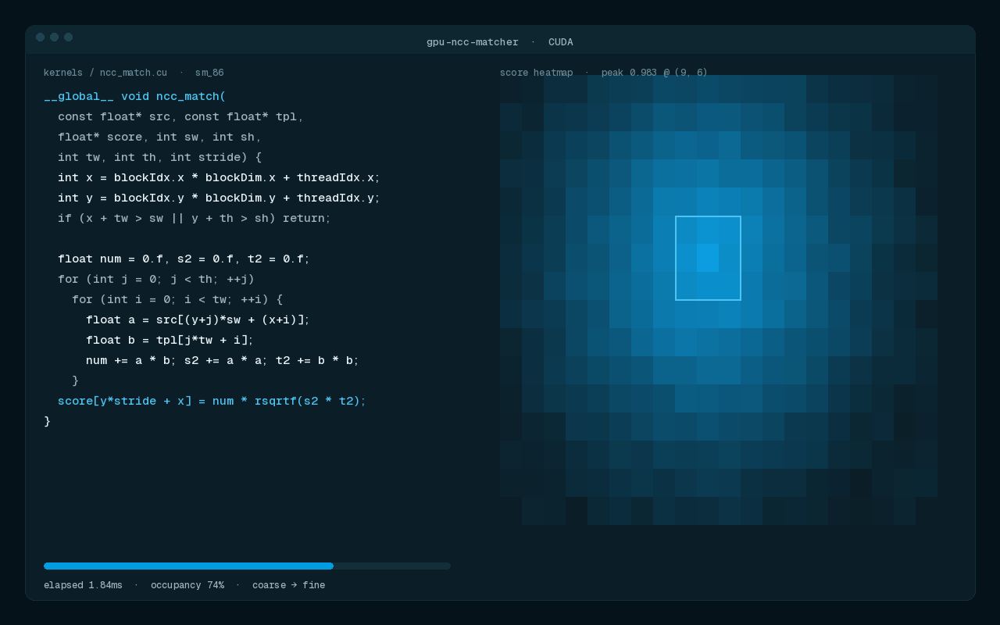
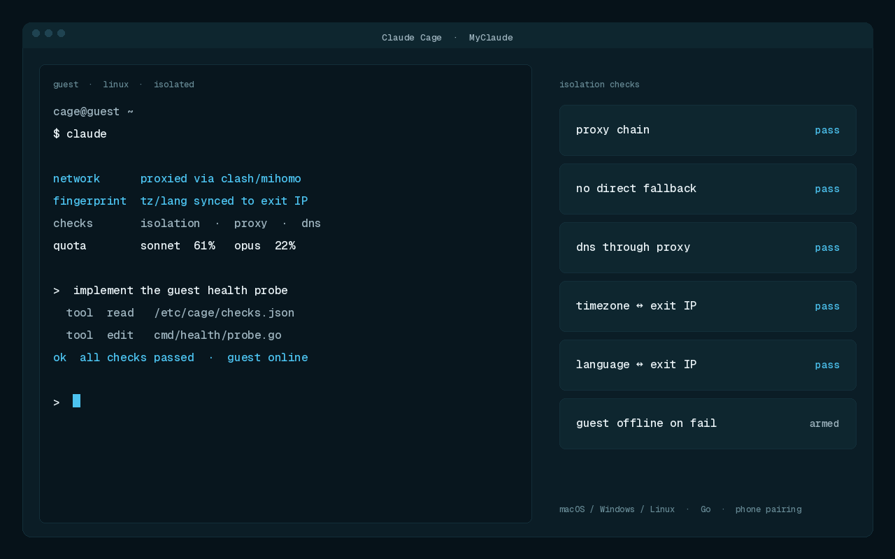
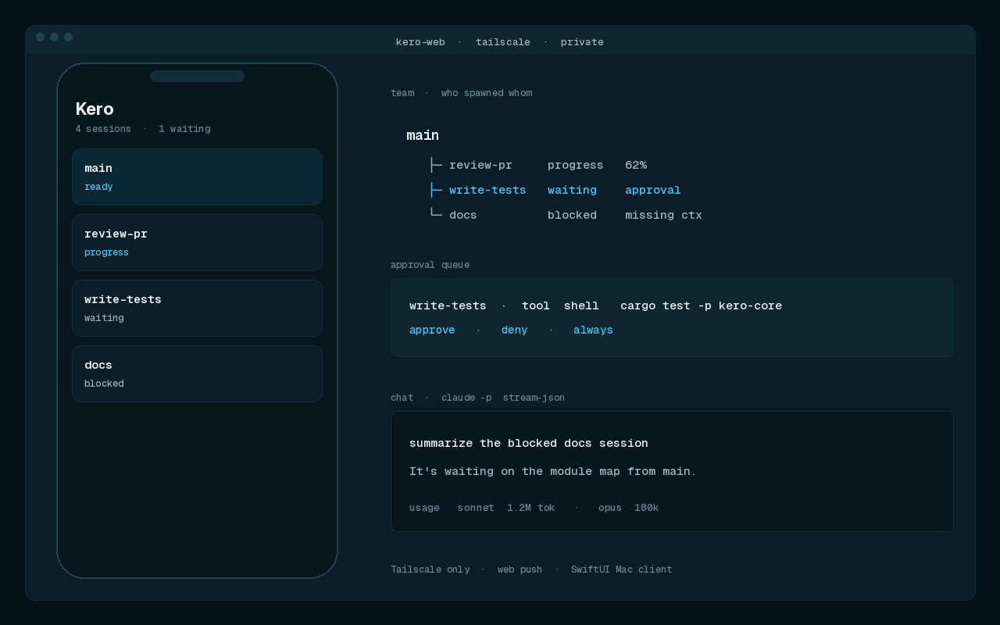
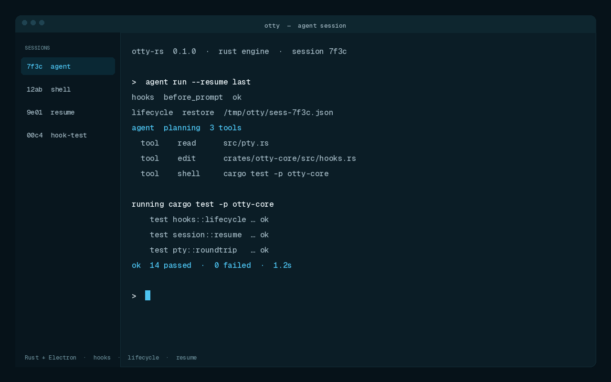
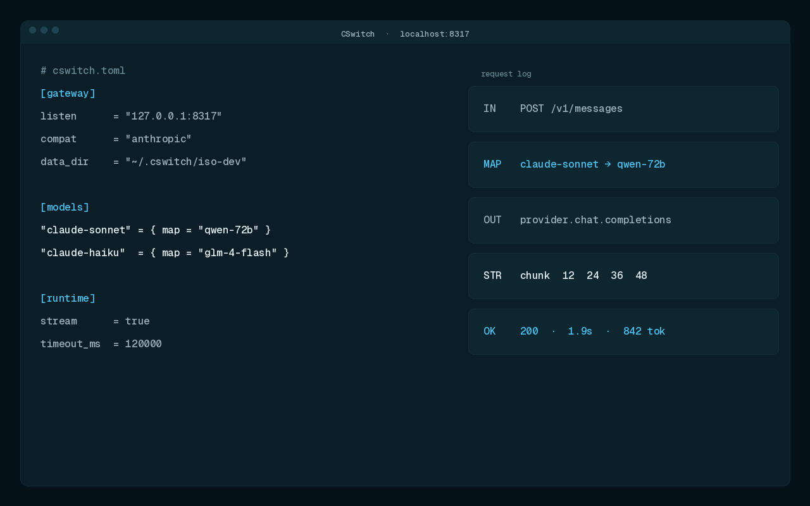

从一次调用开始
Request
一次请求从编辑器发出，带着模型名、上下文和工具列表。
哈尔滨工业大学 · 电子信息 研究生 · AI 工程 / FDE
做 Agents、LLM 网关与 AI Infra，以及面向 AI 的开发者工具。
从一次调用开始
Request
一次请求从编辑器发出，带着模型名、上下文和工具列表。
CSwitch
Gateway
本地把 Anthropic 兼容协议接到第三方模型，做映射，并隔离数据目录。
流式返回
Models
回复以 token 流回来。网关保持会话连续，不把运行时绑死在一家供应商上。
kero-web
Agent
主会话把工作派给子会话，带回进度、等待、就绪、受阻或失败的结构化报告，在同一张网上监管多个 Claude Code / Codex 会话。
otty-rs
Terminal
面向 agent 工作流的终端：生命周期、会话恢复，Rust 引擎，Electron 界面。
五件在做的事

2026 · CUDA
CUDA 上的 GPU 加速归一化互相关（NCC）匹配，采用由粗到精的模板搜索。

2026 · Agents
开箱即用的 Claude Code 隔离工作台：在 macOS / Windows / Linux 虚拟机里跑 Claude，网络代理、时区语言指纹和环境检查集中管理，支持多账号、手机接续和 VPS 部署。

2026 · Agents · 未开源
给 Kero 做的手机端遥控：经 Tailscale 在 iPhone / iPad / Mac 上监管和调度多个 Claude Code / Codex 会话，支持主会话派活、审批队列和推送。

2026 · Agents
从零开始的跨平台 Otty 终端重写，Rust 引擎与 Electron 界面，面向 coding-agent 工作流（hooks、生命周期与会话恢复）。

2026 · Infra
本地 Anthropic 兼容网关：把第三方模型 API 接入 Claude Code，支持模型映射、一键启动和隔离数据目录。
LLM 网关 / Infra
网关 · 映射 · 隔离运行时
本地 Anthropic 兼容网关，第三方推理接入，模型映射与隔离环境
Agents
MCP · Skills · Hooks
Claude Code，隔离工作台，面向 coding-agent 的终端
工程栈
Rust · TypeScript · Python · C · Go · CUDA
交付
桌面 · CLI
面向开发者的应用与工具